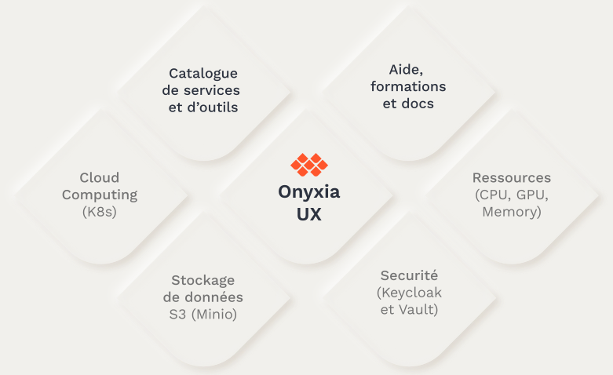

Principes du Datalab
Une plateforme de mutualisation
Le projet Onyxia part du constat de difficultés communes rencontrées par les datascientists du secteur public :
- des agents souvent isolés, du fait de la relative rareté des compétences data dans l’administration ;
- des infrastructures inadaptées, aussi bien en matière de ressources que de technologies, qui constituent un frein à l’innovation ;
- une difficulté à passer de l’expérimentation à la mise en production, du fait de multiples séparations (séparation physique, langage de développement, modes de travail) entre les directions métier et la production informatique.
Face à ce constat, le Datalab SSPCloud a été construit pour proposer une plateforme de mutualisation à plusieurs niveaux :
- partage d’une infrastructure moderne, centrée autour du déploiement de services via des conteneurs, et dimensionnée pour les usages de data science ;
- partage de méthodes, via une mutualisation des services de data science proposés, auxquels chacun peut contribuer ;
- partage de connaissances, via des formations associées au Datalab ainsi que la constitution de commaunautés d’entraide centrées sur son utilisation.
Onyxia, Datalab SSP Cloud : quelles différences ?
Onyxiaest un projet open-source qui propose une plateforme de services de data science, accessible via une application Web. Le Datalab SSP Cloudest une instance du projet Onyxia, hébergée à l’Insee.
Principes fondamentaux
L’architecture du Datalab est basée sur un ensemble de principes fondamentaux :
- une production orientée data science, en proposant une infrastructure dimensionnée à la plupart des usages et un catalogue de services couvrant l’ensemble du cycle de vie des projets data ;
- des choix qui favorisent l’autonomie des usagers, en évitant tout enfermement propriétaire et en permettant l’accès aux couches basses de l’infrastructure pour couvrir les besoins avancés et spécifiques ;
- un projet 100% cloud-natif, mais également cloud-agnostique, permettant un déploiement simple sur n’importe quelle infrastructure ;
- un projet complètement open-source, à la fois du point de vue de ses briques constitutives que de sa diffusion (licence MIT).
Offre de services
Le Datalab est accessible via une interface utilisateur moderne et réactive, centrée sur l’expérience utilisateur. Celle-ci constitue le liant technique entre les différentes composantes d’Onyxia :
- des technologies open-source qui constituent l’état de l’art du déploiement et de l’orchestration de conteneurs, du stockage et de la sécurité ;
- un catalogue de services et d’outils pour accompagner les projets de data science ;
- une plateforme de formation et de documentation pour faciliter l’onboarding sur les technologies proposées.

Le catalogue de services est pensé de manière à accomoder l’essentiel des usages des data scientists, du développement en self-service à la mise en production de traitements ou d’application. L’ensemble du cycle de vie d’un projet data est ainsi couvert, et le catalogue des services est régulièrement étendu pour répondre aux nouveaux besoins des utilisateurs.

Un projet ouvert
Le projet du Datalab Onyxia est résolument ouvert, à de multiples niveaux :
- le Datalab est accessible via son interface Web à tous les agents du service public (via AgentConnect ou une adresse mail en gouv.fr) ainsi qu’aux élèves des écoles de statistique liées à l’Insee (Cefil, Ensai, Ensae) ;
- le code source ouvert et la modularité du projet rendent possible le déploiement d’une instance Onyxia personnalisée sur n’importe quelle infrastructure basée sur un cluster Kubernetes ;
- le projet est ouvert aux contributions extérieures, qu’elles concernent le catalogue des services, l’interface graphique ou l’agencement des briques logicielles qui le constituent.